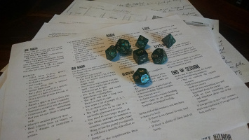

My Story
I’m a web developer and designer. I’ve spent years working with languages and studying how they work- both languages that we speak and languages that we code. If you want to know more about my skills, please check over on that page.
I’m a husband, board gamer , roleplayer, teacher, Cajun, and Texan. If that’s not a dangerous combination, I’m not really sure what is. I spent my formative years chasing the lofty ideals of academia- in particular studying Greek and Latin. This passion took me out of the south to Columbus, Ohio- my current home- where I met my wife and have established a life here.

In my free time, I’m almost always building things. Sometimes I design my own board games or overly complicated inserts for components of other people’s board games (I’m apparently good enough to be commissioned on these). Sometimes I paint miniatures- there's nothing like painting detail on a 2 inch tall piece of metal.
Most importantly, I build worlds. I do this in almost all my activities. For those I teach, I build a world out of the words of long dead men. With friends, I create my own worlds through roleplaying games like Dungeons and Dragons. If you want- I’ll build a world for you too, constructed of code and pictures.